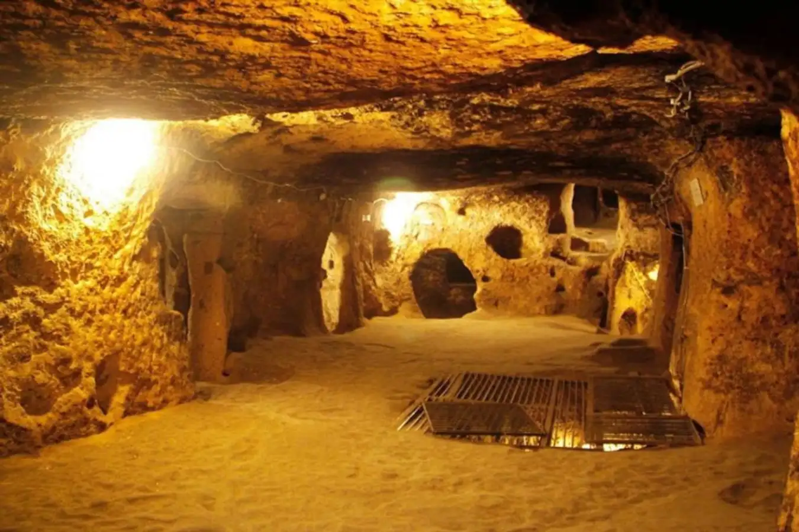
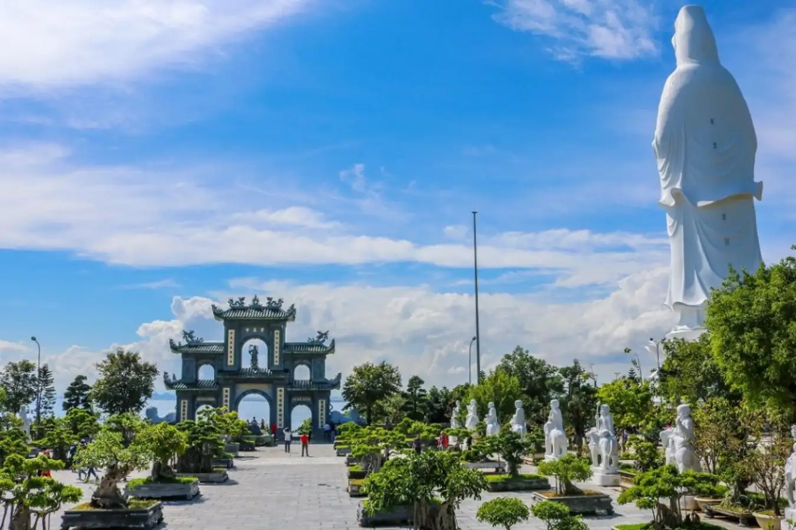
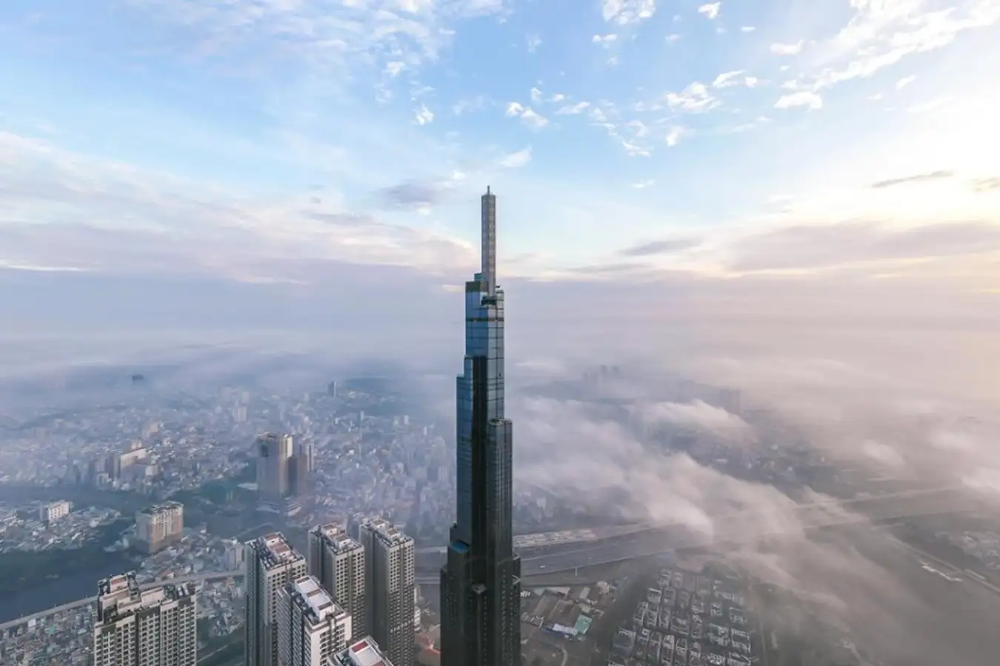

A 7 Days Ho Chi Minh Itinerary of Unforgettable Adventures
Ho Chi Minh City, a pulsating metropolis where ancient temples stand alongside towering modern buildings, entices travellers with its rich mix of history, culture and vibrant street life. Whether you're a history buff who wants to see relics of the French colonial era, a foodie who wants to indulge your taste buds with Vietnamese specialities, or an adventurer who wants to explore the bustling streets, USTH Travel's 7 days Ho Chi Minh City itinerary will take you to Ho Chi Minh's hidden gems and iconic landmarks, so you can return home from Vietnam with memories. So, are you ready to discover the beauty of Ho Chi Minh City? Check out this USTH Travel article for more information!
7 Days Ho Chi Minh Itinerary
Ho Chi Minh City, a symphony of motorbike horns, fragrant street food stalls, and alluring historical sites, offers an exciting adventure for any traveller from around the world. To help you explore its vibrant streets and hidden gems, we have put together a detailed 7 days Ho Chi Minh itinerary to cater to your diverse interests:
Day One: Uncovering the City's Past
On your first day in Ho Chi Minh City, you can dive into Vietnam's complex history at various venues, including the War Remnants Museum. This heartbreaking museum offers a glimpse into the reality of the Vietnam War through exhibits featuring photographs, weaponry and war artefacts. In the afternoon, you can visit the Independence Palace, a symbol of Vietnamese independence and the local people.
Explore the opulent rooms, remnants of the South Vietnamese government, and marvel at the rooftop helipad immortalised in history. Both places are worth a visit, especially if you're a history buff. Spending your first day exploring the historical places in Ho Chi Minh City will help you enrich your knowledge in the following days exploring the beauty of this city.
Day 2: Tapestry of Culture - Temples, Markets and Cu Chi Tunnels

After getting a glimpse of Ho Chi Minh City's history on the first day, you can continue your journey in the city on the second day with a cultural journey. Start your day with a visit to Notre Dame Cathedral, one of the oldest churches in Ho Chi Minh City and a famous tourist attraction as well as one of the 19 most beautiful cathedrals in the world inspired by Notre-Dame Cathedral in Paris.
Not far from Notre Dame Cathedral, you can continue your second day's sightseeing by exploring the bustling Ben Thanh Market, a maze of stalls filled with local handicrafts, souvenirs and exotic delicacies. In the afternoon, venture out of the city to explore the Cu Chi Tunnels, a network of underground passages used by Viet Cong guerrillas during the war. Wander through these narrow tunnels, learn guerrilla warfare tactics and gain a deeper understanding of Vietnamese resilience.
Day 3: A Foodie's Paradise - Street Food Tour and Cooking Classes
On your third day of exploration in Ho Chi Minh City, indulge in the city's vibrant food scene on an enticing street food tour. Sample iconic dishes such as banh mi (Vietnamese baguette), pho (noodle soup) and goi cuon (spring rolls), while strolling through the city's bustling streets. In the afternoon, transform from food enthusiast to culinary expert by participating in a Vietnamese cooking class. Learn the secrets behind classic Vietnamese dishes, get hands-on instruction from local chefs, and savour your hard-earned food.
Day 4: Day Trip to the Mekong Delta - Exploring the Waterways
On the fourth day, you can take an enthralling day trip to the Mekong Delta, the lifeblood of southern Vietnam. Cruise along the Mekong River, a network of waterways filled with lush rice paddies and floating villages. Explore local markets filled with fresh produce, watch traditional handicrafts being made, and enjoy a delicious lunch at a riverside restaurant, while taking in the serene beauty of the delta.
Day 5: Spiritual Journey - Jade Emperor Pagoda and Cao Dai Temple

A visit to Ho Chi Minh City would not be complete without visiting some of its famous temples. One of the must-see temples is the Jade Emperor Pagoda, a vibrant Taoist temple adorned with intricate carvings and statues of Buddhist and Taoist deities. Here, you can marvel at the architectural details and learn about the Taoist faith. In the afternoon, you can head to Cao Dai Temple, a unique blend of Buddhism, Confucianism and Catholicism. Watch the colorful midday ceremony and admire the temple's distinctive architecture.
Day 6: Night on the Town - Landmark 81

Ho Chi Minh City offers a vibrant nightlife. One of the tourist destinations you should not miss while spending time in Ho Chi Minh City is Landmark 81, which is the tallest building in Vietnam. As the name suggests, this 81-floor building consists of offices, apartments, a shopping center, a rooftop bar and restaurant, and an observation deck. If you want a panoramic view of Ho Chi Minh City from above, you can go up to the 79th, 80th and 81st floors. Each floor has its own services, such as a coffee lounge, virtual reality games and an outdoor terrace. In addition, you can also find an international-standard ice rink on the B1 floor, Vincom Center shopping mall on the lower 3 floors, restaurants and bars on the 66th and 67th floors, an infinity pool, and a luxury resort.
Day 7: Relaxation and Souvenirs - Shopping and Pampering
Spend your last morning in Ho Chi Minh City indulging in some shopping therapy. Explore the high-end boutiques of District 1, where you can find everything from designer clothes and handmade jewelry to locally made silk and lacquerware. For a more traditional shopping experience, revisit Ben Thanh Market to hone your bargaining skills and pick up last-minute souvenirs, such as embroidered ao dai (tunics) or conical hats. In the afternoon, treat yourself to a traditional Vietnamese massage or spa treatment, the perfect way to unwind before heading home.
From charming historical sites and bustling markets to quiet temples and delicious street food, Ho Chi Minh City offers an unforgettable adventure for every traveler. This 7 days Ho Chi Minh itinerary provides an overview of the city's vibrant energy, but the real magic lies in exploring its hidden wonders and forging your own path.